Ikony v aplikácii sú skutočné fotky z Wikimedia Commons s voľnými licenciami. Ďakujeme autorom.
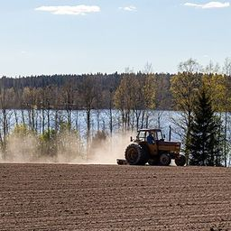 | Tractor plowing fields in Hämeenkyrö, Finland (May 2020).jpg Autor: Markus Säynevirta · Licencia: CC BY-SA 4.0 · upravené (orezané, zmenšené) |
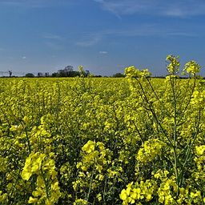 | Field of flowering rapeseed - geograph.org.uk - 7153807.jpg Autor: Neil Theasby · Licencia: CC BY-SA 2.0 · upravené (orezané, zmenšené) |
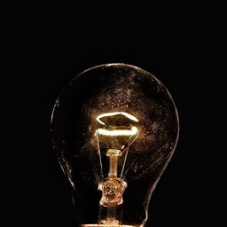 | A glowing bulb in the dark, Jaipur, Rajasthan, India (2017).jpg Autor: akshatsgi · Licencia: CC BY-SA 4.0 · upravené (orezané, zmenšené) |
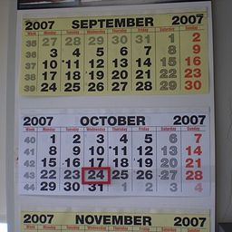 | WallCalendar.jpg Autor: Claudio Elias · Licencia: Public domain · upravené (orezané, zmenšené) |
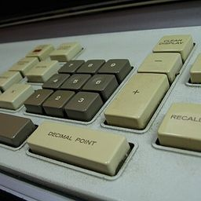 | Calculator keyboard close-up (2224526241).jpg Autor: Marcin Wichary from San Francisco, U.S.A. · Licencia: CC BY 2.0 · upravené (orezané, zmenšené) |
| Stock market charts illustration.jpg Autor: Unknown authorUnknown author · Licencia: CC0 · upravené (orezané, zmenšené) | |
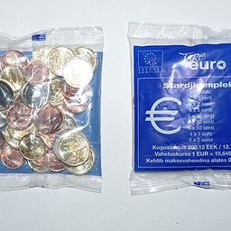 | EURO stardikomplekt.JPG Autor: Dmitry G · Licencia: CC BY-SA 3.0 · upravené (orezané, zmenšené) |
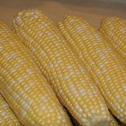 | Corn on the cob (sweet corn).jpg Autor: Nutrition, Food Safety & Health · Licencia: CC0 · upravené (orezané, zmenšené) |
| HUN-2015-Budapest-Hungarian Parliament (Budapest) 2015-02.jpg Autor: Godot13 · Licencia: CC BY-SA 4.0 · upravené (orezané, zmenšené) | |
| Legal Contract & Signature - Warm Tones.jpg Autor: Blogtrepreneur · Licencia: CC BY 2.0 · upravené (orezané, zmenšené) | |
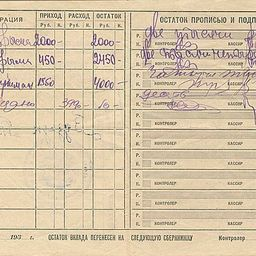 | Книжка сберегательная на счет № 38355. Внутренняя сторона--moneymuseum-by.jpg Autor: Main Administration of State Labour Savings Banks and State Credit, USSR People’s Commissariat of Finance (official form · Licencia: Public domain · upravené (orezané, zmenšené) |
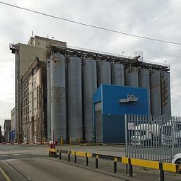 | ADM Milling, South End Mills, Liverpool.jpg Autor: Rodhullandemu · Licencia: CC BY-SA 3.0 · upravené (orezané, zmenšené) |
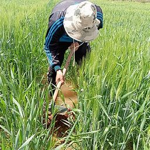 | A Moroccan farmer watering his wheat field.jpg Autor: مصطفى ملو · Licencia: CC BY-SA 4.0 · upravené (orezané, zmenšené) |
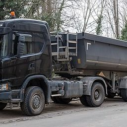 | Scania G500 XT, Frankfurt am Main (P1032713).jpg Autor: Matti Blume · Licencia: CC BY-SA 4.0 · upravené (orezané, zmenšené) |
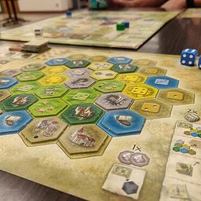 | Castles of Burgundy (Board Game).jpg Autor: Mshuang2 · Licencia: CC0 · upravené (orezané, zmenšené) |
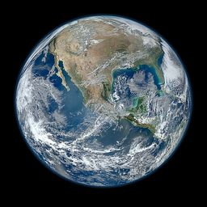 | North America from low orbiting satellite Suomi NPP.jpg Autor: NASA/NOAA/GSFC/Suomi NPP/VIIRS/Norman Kuring · Licencia: Public domain · upravené (orezané, zmenšené) |
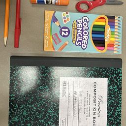 | School Supplies.jpg Autor: TheUltimateGrass · Licencia: CC0 · upravené (orezané, zmenšené) |
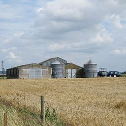 | Grain silos at Sherwood Farm - geograph.org.uk - 2515152.jpg Autor: Bill Nicholls · Licencia: CC BY-SA 2.0 · upravené (orezané, zmenšené) |
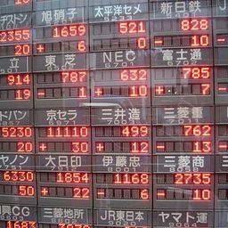 | Electronic stock board in Yaesu, Tokyo 2007.jpg Autor: nappa · Licencia: CC BY 2.0 · upravené (orezané, zmenšené) |
| Euro banknotes, First series.png Autor: Bericht · Licencia: CC0 · upravené (orezané, zmenšené) | |
| A stack of newspapers.jpg Autor: Daniel R. Blume from Orange County, California, USA · Licencia: CC BY-SA 2.0 · upravené (orezané, zmenšené) | |
| Hands-coffee-smartphone-technology (23698591814).jpg Autor: www.Pixel.la Free Stock Photos · Licencia: CC0 · upravené (orezané, zmenšené) | |
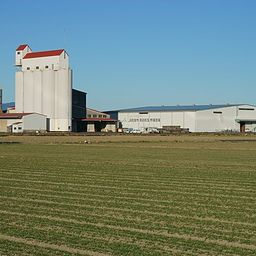 | JA Saga South Refrigerated rice storage warehouses.jpg Autor: Pekachu · Licencia: CC BY-SA 4.0 · upravené (orezané, zmenšené) |
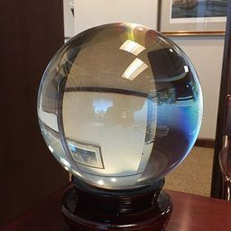 | A crystal ball at work.jpg Autor: PLBechly · Licencia: CC BY-SA 4.0 · upravené (orezané, zmenšené) |
| One stands out 002 2025 01 01.jpg Autor: Friedrich Haag · Licencia: CC BY-SA 4.0 · upravené (orezané, zmenšené) | |
| Business man and woman handshake in work office.jpg Autor: perzon seo · Licencia: CC BY 2.0 · upravené (orezané, zmenšené) | |
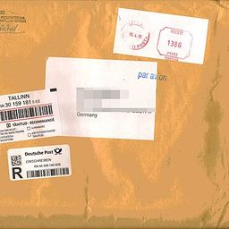 | Registered mail from Estonia to Germany.jpg Autor: Eesti Post · Licencia: Public domain · upravené (orezané, zmenšené) |
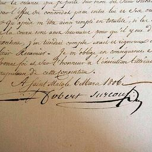 | Marriage contract between Robert Surcouf and Marie-Catherine Blaize-P6280119.JPG Autor: AnonymousUnknown author · Licencia: Public domain · upravené (orezané, zmenšené) |
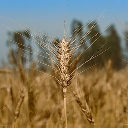 | Wheat ear close-up in a field Bangladesh 03.jpg Autor: A S M Jobaer · Licencia: CC BY-SA 4.0 · upravené (orezané, zmenšené) |
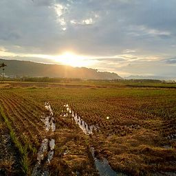 | Sunrise over harvested rice field in Ershui.jpg Autor: LiCheng Shih · Licencia: CC BY 2.0 · upravené (orezané, zmenšené) |
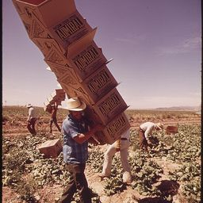 | IN LETTUCE FIELDS ALONG THE COLORADO RIVER, MEXICAN FARM WORKER CARRIES BOXES TO FIELD PICKERS - NARA - 549084.jpg Autor: Charles O'Rear · Licencia: Public domain · upravené (orezané, zmenšené) |
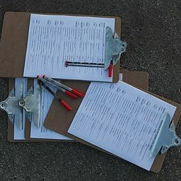 | USMC-100914-M-0646Q-45.jpg Autor: neuvedený · Licencia: Public domain · upravené (orezané, zmenšené) |
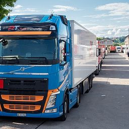 | Volvo FH 500 in Frauenfeld.jpg Autor: JoachimKohler-HB · Licencia: CC BY-SA 4.0 · upravené (orezané, zmenšené) |
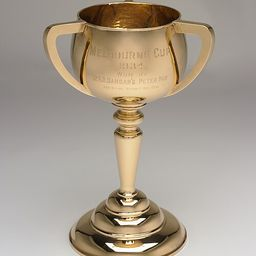 | 1934 Melbourne Cup, National Museum of Australia.jpg Autor: Made by James Steeth for William Drummond Co · Licencia: CC BY 3.0 au · upravené (orezané, zmenšené) |
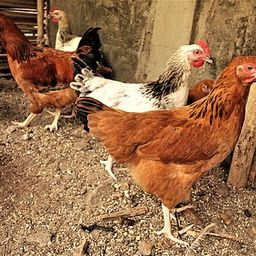 | Des Poulets Goliath de couleur beige dans un poulailler au Bénin.jpg Autor: Adoscam · Licencia: CC BY-SA 4.0 · upravené (orezané, zmenšené) |
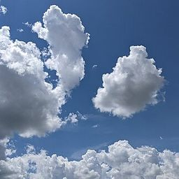 | White Cumulus Clouds against Blue Sky (4).jpg Autor: Lance Vanlewen · Licencia: CC BY-SA 4.0 · upravené (orezané, zmenšené) |
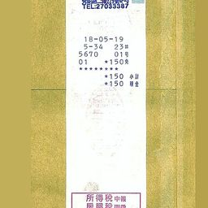 | PF28 ticket uniform invoice CS34397044.jpg Autor: Solomon203 · Licencia: CC BY-SA 4.0 · upravené (orezané, zmenšené) |